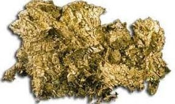

Nº atómico 100 · Grupo Actínidos · Período 7 Configuración electrónica: [Rn] 5f¹² 7s² ·
Estado de la materia: Sólido (esperado)
Propiedades físicas
Masa atómica (isotópica)
[257] u
Densidad
Desconocido (no hay muestra macroscópica)
Punto de fusión
≈ 1527 °C (estimado)
Punto de ebullición
Desconocido
Radiactividad
257Fm, t½ ≈ 100 días
Propiedades químicas
Estados de oxidación
+3 (principal), +2
Electronegatividad (Pauling)
—
Serie química
Actínidos
Compuestos típicos
FmCl₃, Fm(NO₃)₃
Tipo de elemento
Metálico, altamente radiactivo
Aplicaciones y usos
Investigación radioquímica de actínidos pesados.
Estudios de nucleosíntesis y cadenas de decaimiento.
Producción de isótopos para experimentos de frontera.
Descubrimiento e historia
Se descubrió analizando los restos de la primera bomba de hidrógeno, el ensayo “Ivy Mike” del 1 de noviembre de 1952 en el Pacífico: al irradiar uranio-238 con un flujo enorme de neutrones se formaron núcleos mucho más pesados, entre ellos el elemento 100. El hallazgo se mantuvo secreto un tiempo por razones militares y se publicó alrededor de 1953–55. Recibió el nombre fermio en honor al físico Enrico Fermi, pionero de la física nuclear.
Imagen
Video
Md
Mendelevio
Nº atómico 101 · Grupo Actínidos · Período 7 Configuración electrónica: [Rn] 5f¹³ 7s² ·
Estado de la materia: Sólido (esperado)
Propiedades físicas
Masa atómica (isotópica)
[258] u
Punto de fusión
≈ 827 °C
Punto de ebullición
Desconocido
Densidad
Desconocido
Radiactividad
258Md, t½ ≈ 51,6 días
Propiedades químicas
Estados de oxidación
+3 (predominante), +2
Serie química
Actínidos
Comportamiento en solución
Trivalente en medios acuosos
Electronegatividad
—
Tipo de elemento
Metálico, sintético y radiactivo
Aplicaciones y usos
Investigación básica sobre química de actínidos.
Estudios de comportamiento iónico en solución.
No tiene aplicaciones industriales por su escasez.
Descubrimiento e historia
Fue el noveno transuránico descubierto. En 1955, en el laboratorio de radiación de Berkeley, Ghiorso, Seaborg y su equipo bombardearon unos pocos átomos de einsteinio-253 con partículas alfa y lograron producir solo unos 17 átomos de ^256Md: fue el primer elemento sintetizado literalmente “átomo por átomo”. Lo llamaron mendelevio en honor a Dmitri Mendeléiev, creador de la tabla periódica; la IUPAC aceptó el nombre en 1955 (símbolo Mv al inicio, luego cambiado a Md en 1957).
Imagen

Video
No
Nobelio
Nº atómico 102 · Grupo Actínidos · Período 7 Configuración electrónica: [Rn] 5f¹⁴ 7s² ·
Estado de la materia: Sólido (esperado)
Propiedades físicas
Masa atómica (isotópica)
[259] u
Punto de fusión
Desconocido
Punto de ebullición
Desconocido
Densidad
Desconocido
Radiactividad
259No, t½ ≈ 58 min
Propiedades químicas
Estados de oxidación
+2 (muy estable), +3
Serie química
Actínidos
Química en solución
Tendencia marcada al estado +2
Compuestos
NoCl₂, NoBr₂ (trazas)
Electronegatividad
—
Aplicaciones y usos
Investigación de estados de oxidación en actínidos tardíos.
Estudios de estructura nuclear y decaimiento.
No tiene aplicaciones comerciales.
Descubrimiento e historia
Primero lo “anunciaron” en 1957 en el Instituto Nobel de Física en Suecia, bombardeando curio con iones de carbono, pero esos datos luego se consideraron dudosos. Más tarde, en 1966, el Instituto Conjunto de Investigación Nuclear en Dubná (URSS) logró una detección clara y repetible, y hoy se les reconoce el descubrimiento. Se llamó nobelio en honor a Alfred Nobel; hubo polémica por el nombre, pero la IUPAC lo ratificó oficialmente como “nobelium” en 1997.
Imagen
Video
Lr
Lawrencio
Nº atómico 103 · Grupo Actínidos · Período 7 Configuración electrónica: [Rn] 5f¹⁴ 7s² 7p¹ ·
Estado de la materia: Sólido (esperado)
Propiedades físicas
Masa atómica (isotópica)
[266] u
Densidad
Desconocido
Punto de fusión
Desconocido
Punto de ebullición
Desconocido
Radiactividad
266Lr, t½ ≈ 11 h
Propiedades químicas
Estados de oxidación
+3 (trivalente; LrCl₃)
Serie química
Actínidos
Química en solución
Homólogo pesado del lutecio
Energía de ionización
Alta (medida espectroscópicamente)
Electronegatividad
—
Aplicaciones y usos
Investigación en síntesis nuclear y química trivalente.
Experimentos de frontera en aceleradores de partículas.
No tiene usos industriales.
Descubrimiento e historia
En 1958 en Berkeley hubo intentos de sintetizarlo, pero la evidencia era muy débil. El descubrimiento aceptado llegó en 1961, cuando un equipo dirigido por Albert Ghiorso en el Lawrence Radiation Laboratory (California) bombardeó californio con iones de boro y obtuvo isótopos de Lr. Se nombró lawrencio por Ernest O. Lawrence, inventor del ciclotrón; la IUPAC confirmó el nombre y el símbolo Lr en 1997.